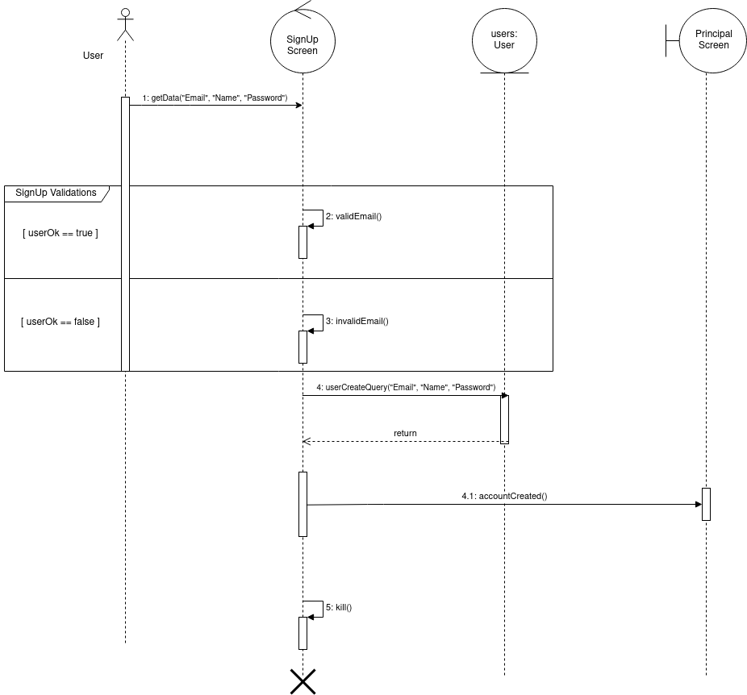
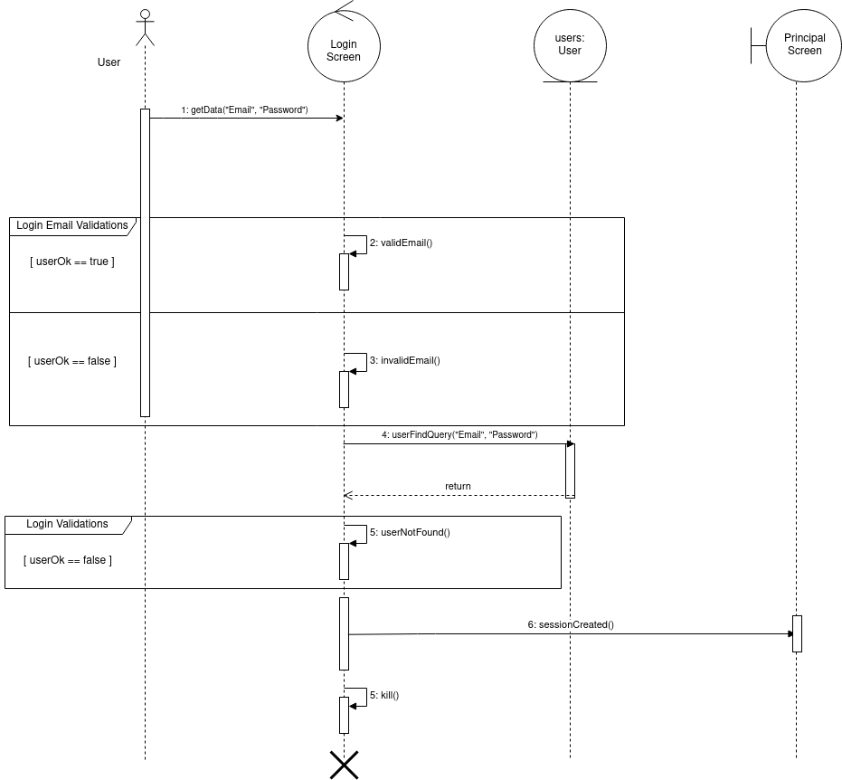
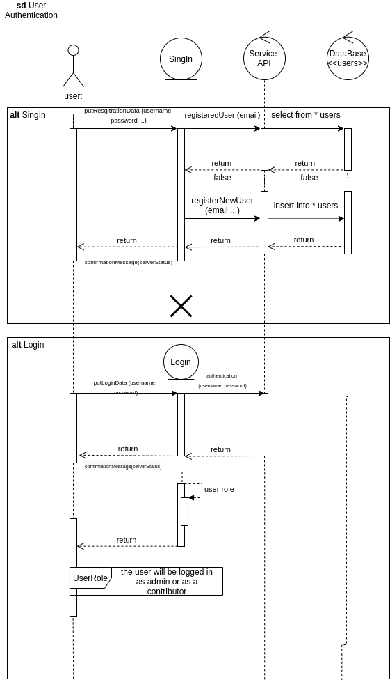
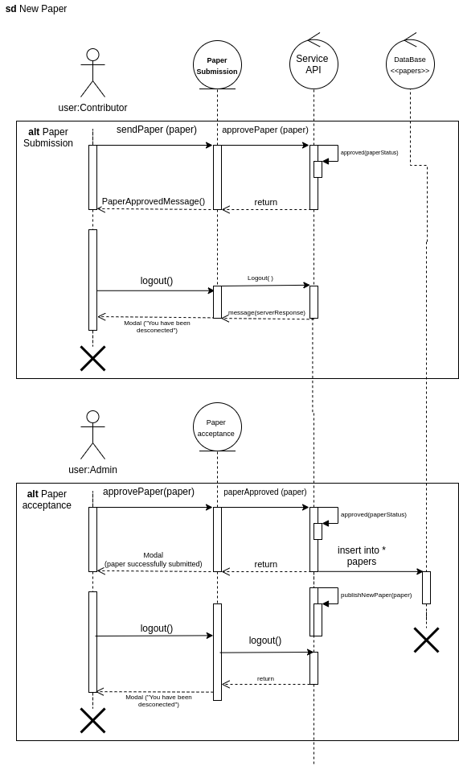

Sequence Diagrams
The sequence diagram is one of the diagrams of uml modeling that has dynamic character, that is, it is a behavioral diagram. It is one of the most popular diagrams, and it aims to demonstrate the exchange of messages between the defined entities, this exchange takes place over a lifeline and has several notations typical of the sequence diagarama to make a visual demonstration of how these exchanges happen.
User SignUp
The diagram below dynamically exemplifies how the user flow will behave.
- User SignUp - version 1

User Authentication
The diagram below dynamically exemplifies how the user flow will behave.
- User Authentication - version 1

- User Authentication - version 1.2

Paper Submission
The diagram below dynamically exemplifies how the paper submission flow will behave.
- Paper submission - version 1 
Tracking Requirements
| Source | Destiny |
|---|---|
| Prototype | User authentication and Paper submission |
| Backlog - User Prototype | User authentication and Paper submission |
References
- [Moodle] Serrano, Milene. Vídeo Aula : Modelagem, Diagrama de Classe, Dependência & Associação, Classe Concreta & Abstrata & Sobrescrita & Sobrecarga, Agregação & Composição, Herança & Realização
- [Moodle] Serrano, Milene. Vídeo Aula : Diagrama de sequencia
- [WebSite] UML site
Document Versioning
| Date | Author(s) | Description | Version |
|---|---|---|---|
| 21/09/2020 | Mikhaelle Bueno | Document creation | 0.1 |
| 25/09/2020 | Lorrany Azevedo | Adding description | 0.2 |
| 25/09/2020 | Lorrany Azevedo | Adding User authentication diagram | 0.3 |
| 25/09/2020 | Lorrany Azevedo | Adding paper submission diagram | 0.4 |
| 25/09/2020 | Lorrany Azevedo | Adding tracking | 0.5 |
| 25/09/2020 | Mikhaelle Bueno | Fix Format | 0.6 |
| 25/09/2020 | Ygor Galeno | Adding old versions of diagram | 0.7 |